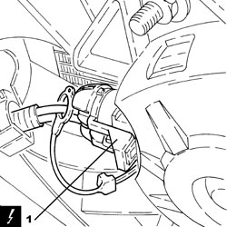
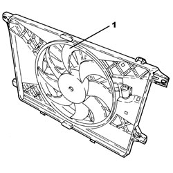
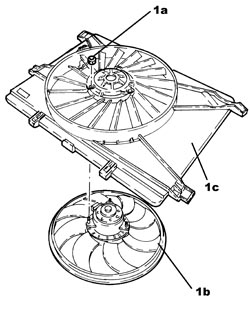
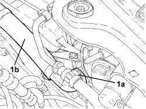
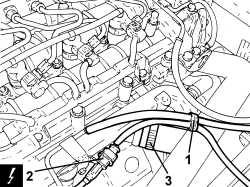
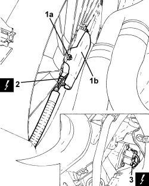
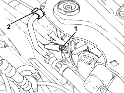
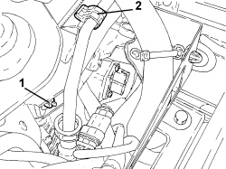
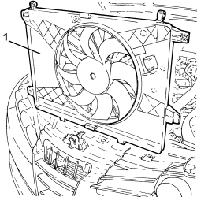
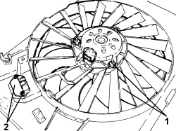

1088E10 RADIATOR COOLING FAN - R + R
- Path
- Procedures > 10 ENGINE > 1088 ENGINE COOLING > 1088E COOLANT TEMPERATURE CONTROL DEVICES > 1088E10 RADIATOR COOLING FAN - R + R
- Kind
- repair procedure (removal / refitting; the operation number is the code)
- Applies to
- engines: 1.9 JTS, 2.2 JTS, 1.9 JTD 8V, 1.9 JTD 16V; all production periods
- Interactive page
- https://sloeber94.github.io/elrnDB/alfa/159/en/#/939010692
Applies to: engines: 1.9 JTS, 2.2 JTS; all production periods
 Removing
Removing
 Refitting
Refitting- Make sure that the ignition key is in the OFF position, then disconnect the battery terminal (-).
Description | Connector | |
|---|---|---|
- | Battery |
1. Undo the bolt (1a) and move the impact sensor (1b) to the side.

Applies to: engines: 1.9 JTS, 2.2 JTS; all production periods
1. Disconnect the electrical connection from the radiator cooling fan.
Description | Connector | |
|---|---|---|
1 | Engine fan motor |

Applies to: engines: 1.9 JTS, 2.2 JTS; all production periods
1. Undo the right nut securing the radiator cooling fan.

Applies to: engines: 1.9 JTS, 2.2 JTS; all production periods
1. Undo the left nut securing the radiator cooling fan.
2. Disconnect the electrical connections for the engine cooling fan resistor.
Description | Connector | |
|---|---|---|
2 | Engine fan adjustment resistance |

Applies to: engines: 1.9 JTS, 2.2 JTS; all production periods
1. Remove the radiator cooling fan releasing it upwards.

Applies to: engines: 1.9 JTS, 2.2 JTS; all production periods
1. At the bench, undo the nuts (1a) and separate the fan motor (1b) from the duct (1c).

Applies to: engines: 1.9 JTS, 2.2 JTS; all production periods
Refitting
Removing- Fit the fan motor on the duct and secure it using the nuts.
- Refit the radiator cooling fan and secure it using the nuts.
- Connect the electrical connections to the engine cooling fan resistor.
- Position the impact sensor in its housing and secure it using the bolt.
- Connect the negative battery terminal.
Applies to: engines: 1.9 JTD 8V, 1.9 JTD 16V; all production periods
Removing
RefittingOp. 0010T20 ENGINE COOLANT - CHANGE
Op. 1016A10 SOUND-PROOFING COVER - R.R
Op. 1048A50 TURBOCHARGER AIR INTAKE PIPE - R.R.
Op. 5530B52 BATTERY SUPPORT/DRIP TRAY - R.R
1. Disconnect rapid connector (1a) and move radiator coolant inlet pipe (1b) sideways.

Applies to: engines: 1.9 JTD 8V, 1.9 JTD 16V; all production periods
1. Disconnect the intermediate coupling for the vacuum pipes for the turbocharger vane postioning actuator control solenoid.
2. Detach the electrical connection for the exhaust gas temperature sensor.
Description | Connector | |
|---|---|---|
2 | Upstream particle filter (DPF) temperature sensor | See K189 UPSTREAM PARTICULATE FILTER TEMPERATURE SENSOR (DPF) |
3. Loosen the band and disconnect the flexible supply pipe from the water pump fluid rigid return pipe.

Applies to: engines: 1.9 JTD 8V, 1.9 JTD 16V; all production periods
1. Undo nuts (1a) and remove heat shield (1b) from the fan motor.
2. Detach the electrical connection for the fan.
Description | Connector | |
|---|---|---|
2 | Fan motor |
3. Detach the electrical connections for the dimmer.
Description | Connector | |
|---|---|---|
3 | Engine fan adjustment resistance - 1 |

Applies to: engines: 1.9 JTD 8V, 1.9 JTD 16V; all production periods
1. Undo the nut securing the fan, right-hand side.
2. Open the retaining clip on the hydraulically assisted steering pipe.

Applies to: engines: 1.9 JTD 8V, 1.9 JTD 16V; all production periods
1. Undo the nut securing the fan, left-hand side.
2. Open the retaining clip on the hydraulically assisted steering pipe.

Applies to: engines: 1.9 JTD 8V, 1.9 JTD 16V; all production periods
1. Lift and remove the fan complete with lower clips.

Applies to: engines: 1.9 JTD 8V, 1.9 JTD 16V; all production periods
1. Undo the nuts and remove the fan from the duct.
2. Undo the bolts and remove the resistor from the duct.

Applies to: engines: 1.9 JTD 8V, 1.9 JTD 16V; all production periods
Refitting
Removing- Fit the resistor back into its housing and secure it to the duct using the bolts.
- Place the fan back in its housing and fasten it to the duct using the nuts.
- Place the complete fan back in its housing, secure it with the lower clips and tighten the upper nuts.
- Close the retaining clips on the hydraulically assisted steering pipe, right-hand and left-hand side.
- Secure the electrical connections for the dimmer.
- Secure the fan electrical connection.
- Place the fan motor heat shield in its housing and secure it using the nuts.
- Connect the flexible pipe to the rigid coolant return pipe to the water pump and secure it using the band.
- Secure the electrical connection for the exhaust gas temperature sensor.
- Connect the intermediate coupling for the vacuum pipes for the turbocharger vane positioning actuator control solenoid.
- Place the radiator coolant inlet pipe back in its housing and connect rapid connector.
Op. 5530B52 BATTERY SUPPORT/DRIP TRAY - R.R
Op. 1048A50 TURBOCHARGER AIR INTAKE PIPE - R.R.
Topics linked from this page (9)
- 0010T20 ENGINE COOLANT - CHANGE
- 1016A10 SOUND-PROOFING COVER - R.R
- 1048A50 TURBOCHARGER AIR INTAKE PIPE - R.R.
- 5530B10 BATTERY - R+R
- 5530B52 BATTERY SUPPORT/DRIP TRAY - R.R
- A001 BATTERY
- K189 UPSTREAM PARTICULATE FILTER TEMPERATURE SENSOR (DPF)
- N011 FAN MOTOR
- O010 ENGINE FAN ADJUSTMENT RESISTANCE - 1